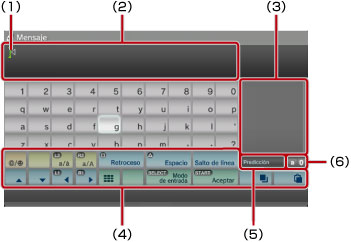
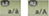
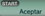
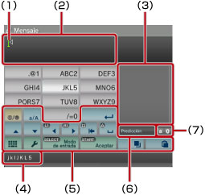
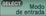

Acerca del menú XMB™ > Utilización del teclado
Utilización del teclado
El teclado se muestra automáticamente cuando es necesario introducir texto. Estas instrucciones están destinadas a los teclados en español. Si desea obtener información acerca del uso de teclados correspondientes a otros idiomas, consulte la guía del usuario del idioma correspondiente.

(1) |
Cursor. |
|---|---|
(2) |
Campo de entrada de texto. |
(3) |
Muestra opciones de texto predictivo. |
(4) |
Teclas de control. |
(5) |
Muestra si el modo predictivo está activado. |
(6) |
Visualización del modo de entrada. |
Lista de teclas
Las teclas mostradas varían en función del modo de entrada y de otras condiciones.
 |
Permite insertar un símbolo o emoticono. |
|---|---|
 |
Permite cambiar el tipo de caracteres que desea introducir. |
| Mueve el cursor. | |
| Elimina el carácter situado a la izquierda del cursor. | |
| Inserta un espacio. | |
| Inserta un salto de línea. | |
 |
Copia o pega texto. |
 |
Cambia al teclado de tamaño reducido. |
| Cambia el modo de entrada. | |
 |
Confirma los caracteres que han sido escritos, aunque no introducidos. Además, permite cerrar el teclado. |
Introducción de caracteres
Con el modo predictivo, al introducir las primeras letras de una palabra se mostrará una lista de las palabras utilizadas con más frecuencia que empiezan con estas letras. A continuación, puede utilizar los botones direccionales para seleccionar la palabra que desee. Cuando haya acabado de introducir el texto, seleccione la tecla "Aceptar" para cerrar el teclado.
Notas
- Es posible que no pueda utilizar emoticonos en algunos modos de entrada.
- Los idiomas disponibles para introducir texto son los idiomas admitidos por el sistema. Por ejemplo, si el idioma del sistema está ajustado en francés, es posible introducir texto en francés. Para ajustar el idioma del sistema, diríjase a
 (Ajustes) >
(Ajustes) >  (Ajustes del sistema) > [Idioma del sistema].
(Ajustes del sistema) > [Idioma del sistema]. - Es posible eliminar todo el texto introducido en el campo si pulsa los botones
 + L1 al mismo tiempo.
+ L1 al mismo tiempo.
Utilización de un teclado conectado
Es posible introducir texto mediante un teclado USB o un teclado compatible con Bluetooth® (se venden por separado). Mientras se visualiza la pantalla de introducción de texto, si pulsa cualquier tecla del teclado conectado, la pantalla de introducción de texto le permitirá utilizar el teclado conectado.
Notas
- Para obtener más información acerca de la conexión de un teclado compatible con Bluetooth®, consulte (Ajustes) >
 (Ajustes de accesorios) > [Administrar dispositivos Bluetooth®] en esta guía.
(Ajustes de accesorios) > [Administrar dispositivos Bluetooth®] en esta guía. - No es posible utilizar el modo predictivo cuando se utiliza un teclado conectado.
- Es posible introducir un salto de línea en el campo de introducción de texto si pulsa Alt + Intro. Únicamente podrá introducir un salto de línea cuando sea aplicable como, por ejemplo, al escribir un mensaje en la categoría
 (Amigos).
(Amigos). - Es posible eliminar todo el texto introducido en el campo si pulsa Shift + Retroceso al mismo tiempo.
- Para pegar texto que ha copiado, pulse Ctrl + V. Se pegará el último texto copiado.
Utilización del teclado de tamaño reducido
Si selecciona en el teclado de tamaño completo, cambiará al teclado de tamaño reducido. En el teclado de tamaño reducido, hay varios caracteres asignados a una sola tecla.

(1) |
Cursor. |
|---|---|
(2) |
Campo de entrada de texto. |
(3) |
Muestra opciones de texto predictivo. |
(4) |
Muestra los caracteres que pueden introducirse mediante la tecla seleccionada. |
(5) |
Teclas de control. |
(6) |
Se muestra si el modo predictivo está activado. |
(7) |
Visualización del modo de entrada. |
 , cambia el carácter a introducir. Por ejemplo, para introducir una [L], seleccione
, cambia el carácter a introducir. Por ejemplo, para introducir una [L], seleccione  y pulse el botón
y pulse el botón  para mover el cursor hasta colocarlo después de la [L]. A continuación, seleccione
para mover el cursor hasta colocarlo después de la [L]. A continuación, seleccione Nota
También es posible utilizar el método de entrada de texto de una pulsación. Utilice la tecla "Opciones" para cambiar el modo de entrada de texto. Si se utiliza el modo de una pulsación, se muestran las palabras que es posible crear utilizando combinaciones realizadas a partir de una de las letras (o números) correspondientes a cada tecla seleccionada como opciones de texto predictivo. Por ejemplo, si selecciona la tecla "DEF3", en la ventana de opciones de texto predictivo situada en el lado derecho del teclado en pantalla, se facilitarán palabras que empiecen por d, e, f o 3. Si se muestra el símbolo ">", continúe introduciendo letras hasta que se muestren opciones de texto predictivo.
Lista de teclas
Las teclas mostradas varían en función del modo de entrada y de otras condiciones.
 |
Permite insertar un símbolo. |
|---|---|
 |
Cambia entre mayúsculas y minúsculas. |
 |
Inserta un salto de línea. |
| Mueve el cursor. | |
 |
Elimina el carácter situado a la izquierda del cursor. |
 |
Inserta un espacio. |
|
Copia o pega texto. |
 |
Cambia al teclado de tamaño completo. |
 |
Muestra el menú de opciones. |
 |
Cambia el modo de entrada. |
| Confirma los caracteres que han sido escritos, aunque no introducidos/Permite cerrar el teclado. |